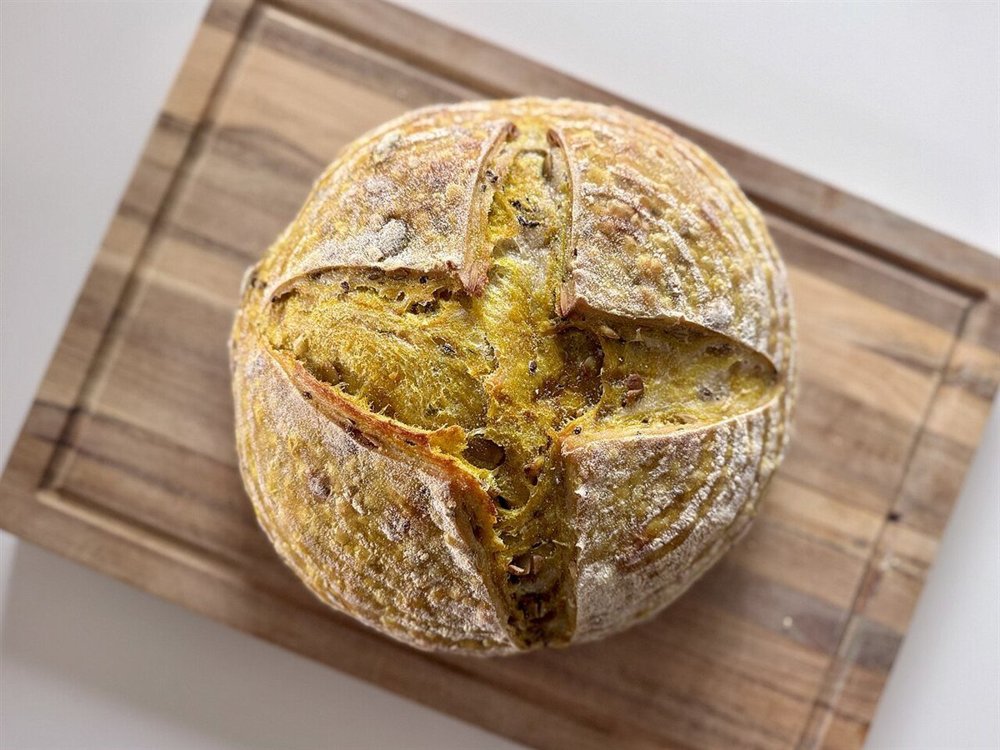

回転式レーダーの部位の配置図
制作側の連想
くるくる回るレーダーを、配置図にしてみる
このサイトは、回転式のレーダーを横から見た図にしたものとして作りました。六つの部位に番号をふり、上の図と並べています。制作側の連想で、お店の理念・由来とは無関係です。実際の機器の仕様を示すものでもありません。
凡例
六つの部位
- 1アンテナいちばん上で回る、横に長い板。電波を送り出します。
- 2回転台アンテナの根もとで、ゆっくり向きを変える土台。
- 3マスト全体を高い位置に立たせる、まっすぐな支柱。
- 4送受信機電波を出し、はね返りを受け取る箱。
- 5表示器円い画面に、受け取った結果を映す部分。
- 6電源ケーブル各部に電気を届ける、太い一本の線。
ギャラリー(イメージ)
パンの写真




写真はパンのイメージです。お店のものではなく、お店で提供している商品を示すものでもありません。
ギャラリー(イメージ)
窯とカップの写真


写真は窯とカップのイメージです。お店のものではありません。
ご案内
お店のこと(確認できたものだけ)
| 所在地 | 〒284-0005 千葉県四街道市四街道1丁目3-11 |
|---|---|
| 電話 | 準備中 |
| 営業時間 | 準備中 |
| 定休日 | 準備中 |
| ご予約 | 準備中 |
| 駐車場 | 準備中 |
| SNS | Instagram @kasioisi |